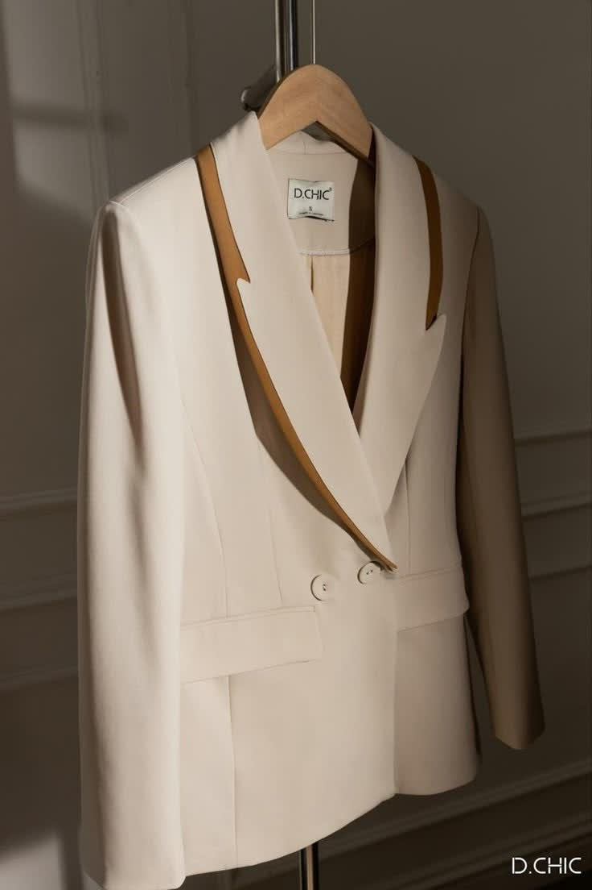
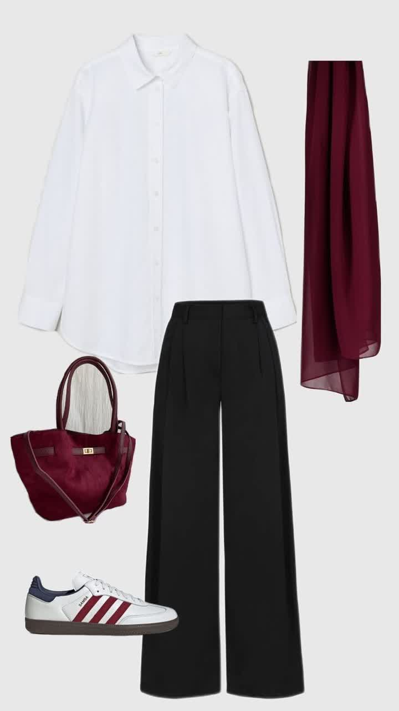
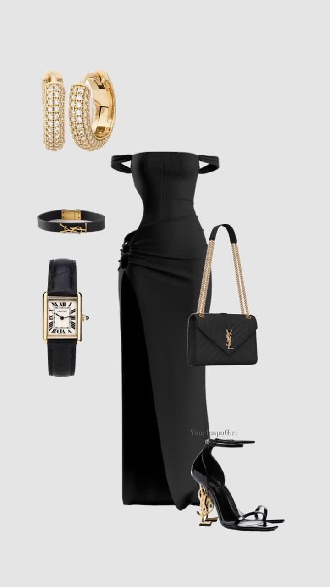

استایل کلاسیک
استایل کلاسیک، ترکیبی از سادگی، اصالت و وقار است. این استایل با تکیه بر طراحیهای بیزمان، پارچههای با کیفیت و رنگهای خنثی، انتخابی مطمئن برای کسانی است که به دنبال ظاهری شیک، رسمی و همیشهمد هستند. کلاسیک یعنی هرگز از مد نمیافتد!
✨ ویژگیهای استایل کلاسیک:
- لباسهایی با برشهای دقیق و تمیز
- رنگهای خنثی مانند مشکی، سفید، کرم و طوسی
- پوشش رسمی و با وقار
- جزئیات ساده اما تأثیرگذار
- پارچههای با کیفیت مثل پشم، پنبه و کتان

کت کرمی با برش کلاسیک

پیراهن سفید رسمی با شلوار راسته

استایل شب کلاسیک با ترکیب مشکی و طلایی